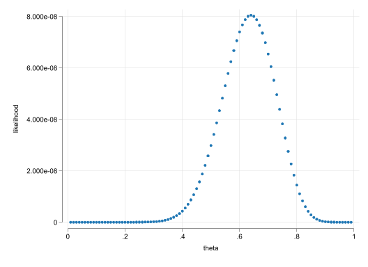

clear
set obs 2000
gen r1 = runiform()
gen r2 = rchi2(5)/5
gen r3 = round(rchi2(3))*3
gen r4 = rnormal()
set scheme white2
color_style tableau
histogram r1, name(m1, replace)
histogram r2, name(m2, replace)
histogram r3, name(m3, replace) width(1)
histogram r4, name(m4, replace)
graph combine m1 m2 m3 m4
graph export images/fig9_1.png, width(1000) replaceLimited Dependent Variable Models
MLE-Mua ha ha ha
What do we mean Limited??

What do we mean Limited??
- When we think about “limited dependent variable” models, we refer to models when the distribution of the dep.variable is “limited”
- In other words. The values it can take are restricted! (positive, or only integer), within a range, etc
- Can you still use LRM for them?
- Will anything change if you do?
- Do we care?
No we dont, but..
- We dont really care. In fact we have already use LRM on that fashion:
- LPM: Dep variable was a Dummy
- Wages: Always positive
- # Children: Countable
- But, there are couple of things one should consider.
- Models of this kind are usually heteroskedastic by construction. (robust? Weighted?)
- Predictions could made no sense.
- There are better models we could use to analyze the data
Better under some assumptions
- However, this models cannot be estimated using OLS (there is no “close form solution”)
- We may need to learn a new method: Maximum Likelihood
Probits and Logits
- LPM are easy, fast, and good for most data analysis (exploration). But they have some limitations.
- Most limitations can be overcome with alternative models: Logit or Probit
- In constrast with LPM (which aims to explain individual outcomes), Logit/probit aims to explain Conditional Probabilities:
\[p(y=1|x) = G(x\beta)\]
- where the function \(G()\) makes sure the predicted outcome is always between 0 and 1.
- Caveat: Because \(G()\) is nonlinear, this is a nonlinear model, and marginal effects are harder to estimate.
What to use for \(G()\)
- Two leading options:
\[logit: G(x\beta) = \frac{\exp{x\beta}}{1+\exp{x\beta}}\] \[probit: G(x\beta) = \Phi(x\beta)=\int_{-\infty}^{x\beta}\phi(z)dz\]
- But in practice Either will work. Then why the difference?
Probits and Logits: Latent variables
It all comes down to the Latent variable!
Assumption:
Everybody has a latent score on every “binary” decision: The value to a decision \(y^*\) \[y^* = x\beta + e \]
If \(y^*\) is above certain threshold (\(y^*>0\)), you “do” something (\(y=1\)). If not you dont (\(y=0\)).
Thus the choice between logit and probit depends on the distribution of \(e\).
- \(e\) is normal, then probit
- \(e\) is logistic, then logit
Some Math
Latent Model:
\[ y^* = x\beta + e \]
We aim to measure the probablity of a positive latent.
\[\begin{aligned} P(y^*>0|x) & = P(x\beta + e>0|x) \\ & = P( e>- x\beta|x) \\ & = 1 - P( e < - x\beta|x) = 1-G( - x\beta|x) \\ & = G(x\beta) \end{aligned} \]
last step valid only if \(G()\) is symetrical.
Marginal Effects?
- Same as before. The partial derivative!
\[\begin{aligned} p(y=1|x) &= G(\beta_0 + \beta_1 x_1 +\beta_2 x_2 ) \\ \frac{\partial p(y=1|x)}{\partial x_1} = G'(x\beta)\beta_1=g(x\beta)\beta_1 \end{aligned} \]
- But if variables are dummies, we need to estimate true effect.
\[\begin{aligned} p(y=1|x) &= G(\beta_0 + \beta_1 x_1 +\beta_2 D_2 ) \\ \frac{\partial p(y=1|x)}{\partial D_2} = G(\beta_0 + \beta_1 x_1 +\beta_2 )-G(\beta_0 + \beta_1 x_1 ) \end{aligned} \]
and yes, you could also have interactions, polynomials, etc
MLE: How does this work?
MLE: Maximum Likelihood Estimator, is an alternative method to OLS that allows you to estimate parameters in nonlinear models.
The idea of the method is to “model” the conditional distribution of the data \(F(y|x,\theta)\) or \(f(y|x,\theta)\), assuming \(X's\) are given and modifying values of \(\theta\) (distribution parameters).
\(LRM\) could be estimated via MLE, but you will need More assumptions:
- The error \(e\) is normal.
Then “simply” find the parameters for the mean and variance that “maximizes” the probability that data Comes a given distribution.
In the case of Probit/logit, there is “only” one paramter we need to identify. The conditional probabilty \(p(y=1|X)\).
- Except that we allow this to vary by \(X\)
Likelihood function for Logit/probit
\[L_i = G(x\beta)^{y=1}*(1-G(x\beta))^{y=0} \]
Under Independence:
\[L_D = L_1 \times L_2 \times \dots L_N \]
Thus we need to find the \(\beta's\) that make \(L_D\) the largest.
clear
set obs 25
gen r = runiform()<.7
mata:
r = st_data(.,"r")
ll = J(99,2,0)
for(i=1;i<=99;i++){
theta = i/100
// Log Properties
ll[i,]= theta,exp(sum(log(theta:^(r:==1) :* (1-theta):^(r:==0))))
}
end
qui getmata ll*=ll , force
ren ll1 theta
ren ll2 likelihood
*scatter likelihood theta Number of observations (_N) was 0, now 25.

Testing?
- You have two options…
- And two sets of parameters